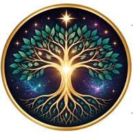

School of Human Patterns
The most relatable entry point. Students begin with the Patterns they already recognise in daily life.
First, because it answers the question most students arrive with: why do I keep doing this?

Explore · Understand · Live more fully
Beneath the way we think, choose, relate and respond are Concepts and Patterns that quietly shape our experience.
The Institute offers a way to see those patterns more clearly, understand how they work together, and begin recognising them in your own life.
The Human Operating System
Why can we consciously want one thing, yet find ourselves repeatedly creating something different?
The Institute teaches that our experiences are not isolated. What we hold as true influences what we expect, how we feel, how we respond, and ultimately what we experience.
The cycle begins again
Choose a stage to read it.
Concept
Everything begins with Concept. Concepts influence beliefs, expectations, patterns, choices, and life experiences.
Belief
The beliefs and expectations that form around a Concept.
Pattern
Patterns of Behavior may influence how we think, choose, relate, and respond to life.
Emotion
Michael has not written this stage yet.
Behavior
Michael has not written this stage yet.
Life Result
Michael has not written this stage yet.
Six interconnected stages.
A continuous cycle.
A way to see what may be operating beneath the visible circumstances of your life.
How the education fits together
There is no single doorway into this work.
Some begin with a question. Others with a Pattern they keep repeating, a Concept they recognise, or simply the sense that there is more to understand.
Wherever you begin, each discovery opens the way to something deeper.

Explore the Institute
There is no single way to explore the Institute. Follow a question, deepen your study, spend time with the written teachings, or join a conversation in real time.
Twelve Concepts to begin with, each with the Patterns it produces and the beliefs that form around it. Follow what is relevant to your present life rather than a fixed sequence.
The Concept StudiesFrom the free Five Laws to the ten-week Foundation, the Human Operating System and Body Symbology.
The four CoursesRead, underline, return to passages, and study at your own pace. Written editions are bought separately from the audiovisual Courses.
Written editionsSeminars focused on a single subject, taught live.
All seminarsThe launch library
Concept Studies allow students to explore the individual Concepts that influence beliefs, expectations, patterns, choices, and life experiences — and to select the ones most relevant to their present lives, rather than following a predetermined sequence.
The Concepts that open the library
Deeper study
The Schools provide the Institute's most comprehensive areas of continuing education. Rather than examining only a single Concept or Pattern, each School contains multiple Courses devoted to a major area of human understanding. Six open the Institute, in the order Michael recommends beginning them.
The most relatable entry point. Students begin with the Patterns they already recognise in daily life.
First, because it answers the question most students arrive with: why do I keep doing this?
Explains why life repeats, and how consciousness, mind, brain, Concepts, expectations, emotions and Patterns work together.
Acceptance, approval and rejection, the mother and father relationships, self-image, self-worth, roles, masks and belonging.
How experiences receive meaning, Concepts are accepted, expectations develop, and Patterns are created to validate Concepts.
Applies the teachings to expectations, communication, responsibility, recurring relationship Patterns and resolution.
Relationships do not create the Concepts within us. They reveal the Concepts that already exist.
Develops awareness, understanding, conscious choice, and participation in the direction of life.

The work begins with awareness
The Institute exists to help you recognise the Concepts, beliefs and Patterns operating beneath your experience — not so that someone else can tell you what your life means, but so that you can understand it more clearly for yourself.
Awareness creates the possibility of choice.
Understanding gives you somewhere to begin.
Begin with the Five Laws of Manifestation and discover the foundational ideas behind the work.
Start with the free courseMembership provides preferred access and pricing across qualifying Courses, books and study materials.
Explore membershipExplore. Understand. Live more fully.